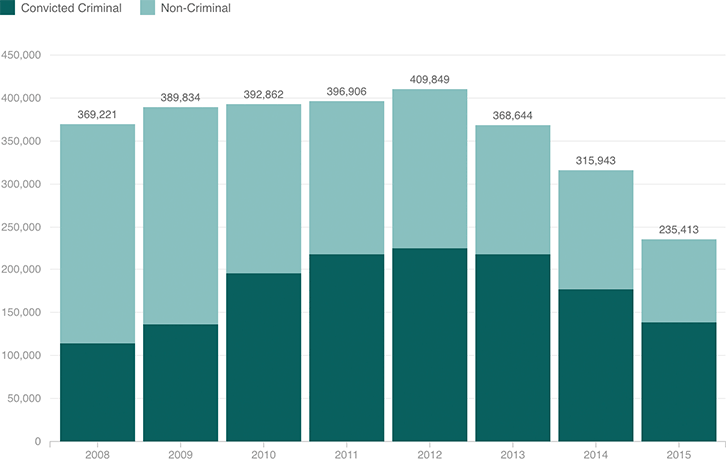

ICE Increasingly Focused On Deporting Criminals
Immigration and Customs Enforcement says it has increasingly focused on removing people who are “the most significant threats to national security, public safety, and border security.” In 2008, only 31 percent of people deported were convicted criminals. In 2015, 59 percent were.
